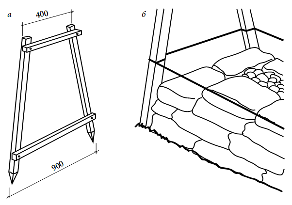
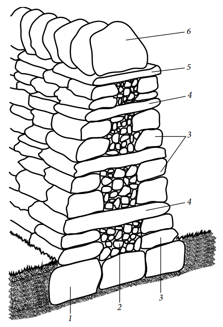

Більшість стін для міцності викладають на розчині. Єдиним винятком є огорожі, побудовані з природного каменю
всуху. Такі стіни, якщо вони побудовані правильно, будуть стояти багато років, і навіть якщо окремі камені
випадуть, їх можна швидко повністю відновити.
Найбільш підходить для сухої кладки плитняк-піщаник. Як
правило, всі шість його поверхонь попарно паралельні. Товщина матеріалу становить від 15-20 до 100 мм і
більше. Довжина ж і ширина плитняку може досягати 2 м — тут все залежить від того, як розколовся пласт під час
видобутку. Плитняк сортують за товщиною: тонкі пласти йдуть на виробництво облицювальної плитки, з більш
товстих каменів викладають фундаменти і стіни різних будівель. Піщаник добре ріжеться болгаркою.
якщо ви хочете, щоб огорожа мала абсолютно натуральний вигляд, краще всього викладати стінки всуху. Завдяки
неправильній формі каміння в стіні утворюється багато шпарин, які обов'язково облюбують рослини.
Перш ніж починати будувати таку огорожу, переконайтеся, що у вас є місце, куди вивантажити доставлені
камені. Потім розсортуйте камені за розмірами: великі — для основи; середнього розміру з рівною гранню — для
лицьової сторони; довгі наскрізні і дрібні — для забутовки. Відкладіть камені, які будуть формувати гребінь
стіни.
Укладка фундамента. Міцність кам'яної огорожі, викладеної всуху, залежить від ретельності
укладання кожного окремого каменя. Ні бетонний, ні стовпчастий фундамент під таку стіну не закладають. У
неглибоку траншею кладуть шар великих важких каменів, а на них укладають перший ряд стіни.
Спочатку
накресліть границі основи паркана шириною 900— 1000 мм, зніміть дерен або звільніть поверхню від рослинності.
Викопайте траншею на глибину приблизно 150 мм або до тих пір, поки не досягнете грунту. Утрамбуйте грунт, щоб
він став твердим.
Тепер можете укладати камені фундаменту. Це повинні бути великі і відносно плоскі
камені, прямокутні грані яких повинні бути з зовнішньої сторони стіни. Підженіть камені один до одного як
можна тісніше і рівномірно заповніть проміжки між ними більш дрібними каменями.
Будівництво стіни.Ключовою особливістю вільно стоячої кам'яної огорожі, викладеної всуху, є те, що кожна її поверхня, від
фундаменту і до вершини, нахилена всередину. Цей нахил називається відкосом. В результаті стіна, яка має на
рівні землі товщину 900 мм, звужується до вершини до 400 мм.
Без досвіду такий нахил не забезпечити, тому
треба виготовити дві відкосні рами, які допоможуть побудувати стіну з постійним і точним нахилом.
 Відкосна рама: а — конструкція; б
— використання при установці обноски
Їх встановлюють на протилежних кінцях фундаменту і киянкою забивають
загостреними кінцями в землю. Бічні поверхні рам означують потрібний відкіс. Для полегшення контролю на рами
натягують будівельний шнур, який по мірі укладання стіни необхідно переміщати вгору вздовж рам.
«Суха»
огорожа складається з двох роздільних стінок, що сходяться до вершини, а простір між ними заповнюють
забутовкою — наповнювачем з більш дрібних каменів. Викладіть ряд каменів середнього розміру на фундамент
уздовж кожної лицьової сторони стіни, викладаючи найбільш рівним торцем ззовні. Переконайтеся, що ряд злегка
відступає від краю каменів фундаменту. Щоб камені не скочувалися з попереднього ряду, використовуйте дрібні
осколки для їх підклинювання (цей процес називається забивання). Такі камінчики-забивають клини зсередини
стіни, щоб вони не були помітні. Заповніть порожнину між протилежними рядами дрібними шматками каменю і як
можна щільніше утрамбуйте їх. Не використовуйте для забутовки м'який грунт: його дуже скоро вимиє дощ, і
камені стануть небезпечно нестійкими.
Оцінити кількість необхідного матеріалу для такого паркану — досить важке завдання, оскільки ви не можете
просто підрахувати кількість блоків, як у випадку з цегляною стіною. За приблизними оцінками, 1 т каменю
заповнює приблизно 1 м3 стіни, включаючи фундамент. Зрозуміло, замовляти будматеріал треба з запасом, щоб не
шукати його знову, якщо вам не вистачить декількох каменів.
На кінцях стіни викладають шар довгих наскрізних каменів. Вони повинні бути спрямовані в центр стіни і
нахилені трохи назад для додаткової стійкості.
В залежності від товщини використовуваної каменю, можливо,
доведеться додати другий або навіть третій ряд, щоб довести стіну до висоти близько 600 мм. При цьому постійно
перевіряйте, щоб кожен ряд мав необхідний нахил. Камені намагайтеся класти так, щоб вони перекривали місце
стику між камінням, що лежать в ряду під ними. Це нагадує ложковую перев'язку в цегельній кладці.
Переконайтеся,
що поверхні обох бічних стінок і забутовка вирівняні по горизонталі. Потім укладіть ряд довгих наскрізних
каменів, кожен з яких проходить від однієї поверхні стіни до іншої і тим самим перев'язує обидві стінки.
Занадто довгі камені слід вкоротити за допомогою долота і молотка. Якщо у вас недостатньо каменів потрібної
довжини, розташуйте їх на однаковій відстані один від одного вздовж всієї стіни, а потім покладіть між ними
більш короткі, «напівнаскрізні» камені. Вони повинні бути досить довгими і досягати центральної лінії стіни.
Знову проведіть забивання дрібних каменів, діючи з внутрішньої сторони стіни. Камені не повинні гойдатися!
Потім укладіть заповнюючі камені у проміжки між ними.

1 —
камінь основи; 2 — забутовка; 3 — фасадні камені стінок; 4 — наскрізний камінь; 5 — покриваючий ряд; 6 —
каміння гребеня
Продовжуйте будівництво стіни до необхідної висоти, контролюючи кладку з допомогою
будівельного шнура на відкісній рамі. Для низької стіни може знадобитися всього лише один додатковий шар
фасадного каміння, за яким слідує покриваючий шар і гребінь. Для більш високих стін може знадобитися ще один
шар фасадних каменів і ще один шар наскрізних каменів ближче до вершини. Врахуйте, що максимальна висота
огорожі, складеною всуху будівельником - любителем, — 1200 мм. Більш високі стіни досить нестійкі, для їх
зведення краще запросити фахівця.
Проведіть остаточні забивання і забутовку і знову перевірте рівень
верхньої поверхні стіни. Тепер можна класти покриваючий ряд. Його камені укладають так, щоб запобігти
насичення забутовки дощовою водою. Їх лицеві кінці повинні виступати за ухил відкосу приблизно на 50 мм,
перев'язуючи верхні ряди між собою, а внутрішні кінці — зчіплюватися один з одним як можна щільніше, подібно
зубам пилки. Щоб добре підігнати камені, при необхідності їх слід обрізати. Проведіть забивання, щоб камені
стійко лежали у верхньому ряду стіни і служили надійним фундаментом для гребеня.
Якщо ви будуєте паркан у місцевості, де зимові холоди особливо суворі, краще все-таки трохи відійти від
традицій і покласти покриваючий ряд на розчинну постіль. Це зменшить проникнення води і, відповідно,
запобігає руйнування стіни і окремих каменів через морози. Адже саме при замерзанні води виникають сили, які
зрушують камені і роблять стіни нестійкими.
Після остаточної перевірки завершуючого ряду по будівельному шнуру викладають гребінь. В якості гребеня
можна використовувати ряд рівне підігнаних один до одного напівкруглих каменів, покладених на ребро, або
окремі камені, плосковкладені на вершину покриваючого ряду.
У будь-якому випадку камені повинні
розташовуватися якомога щільніше один до одного. Якщо їх кладуть на ребро, то вони повинні мати однаковий
невеликий нахил. Невеликі камінчики забивають молотком під кожен окремий камінь гребеня, щоб додати стійкість.